Side-by-side check of the PDF the frontend prints and the PDF the backend generates, for the same six reports. All data shown is fictional test data.
Boiler
Frontend (UI print) 2 page(s) · PDF
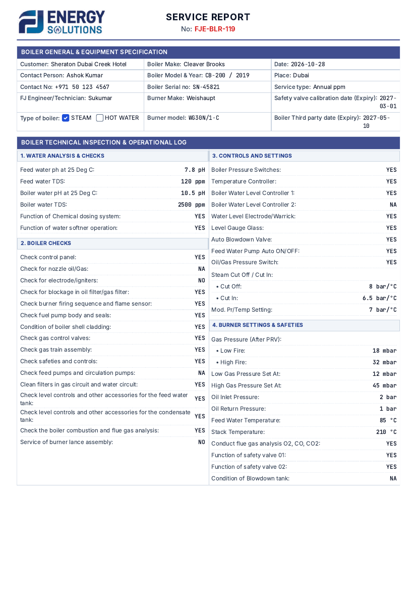
Backend (Docker API) 2 page(s) · PDF
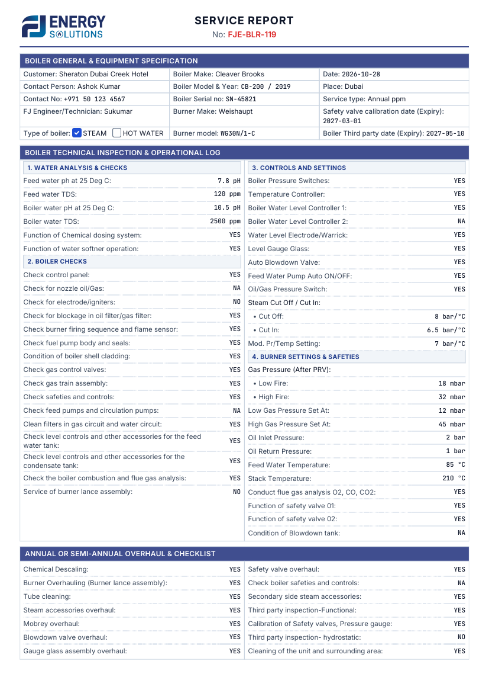
Calorifier
Frontend (UI print) 2 page(s) · PDF
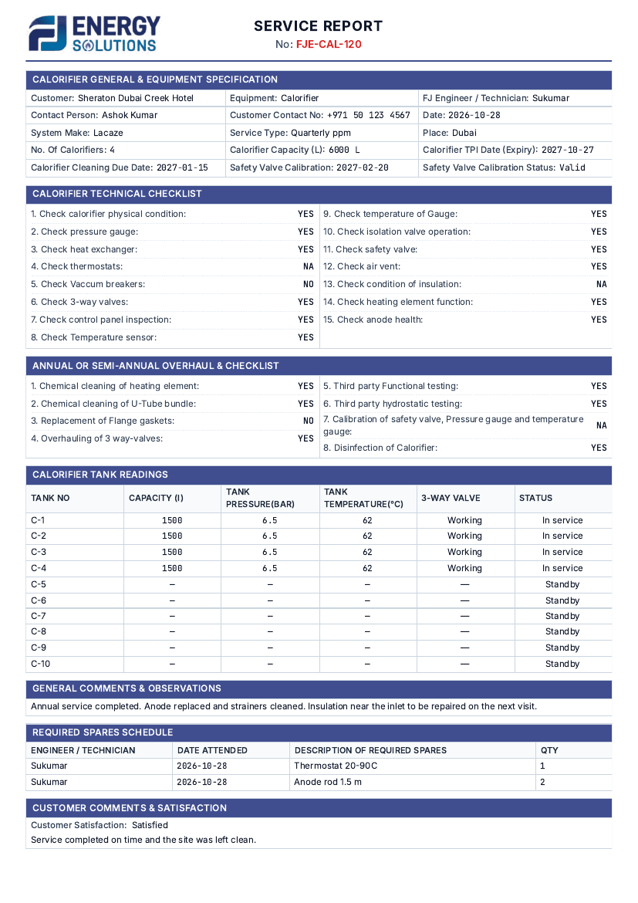
Backend (Docker API) 2 page(s) · PDF
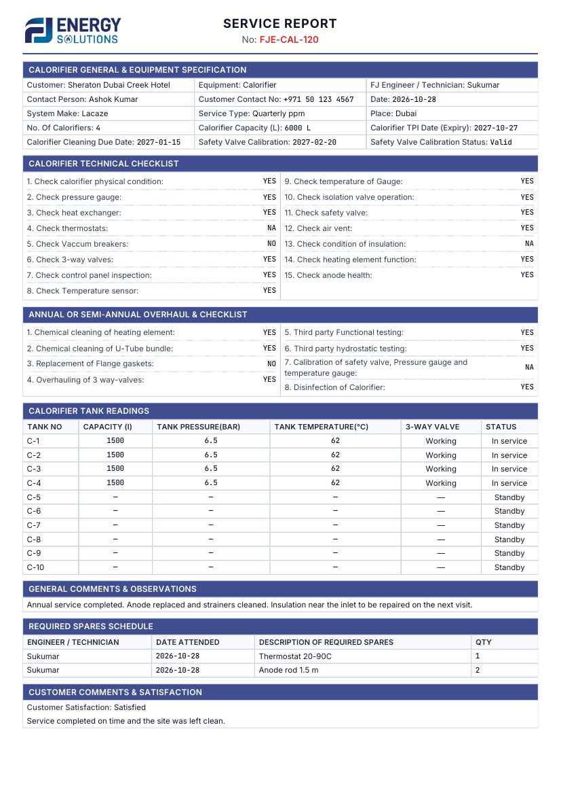
Solar - Forced Circulation
Frontend (UI print) 2 page(s) · PDF
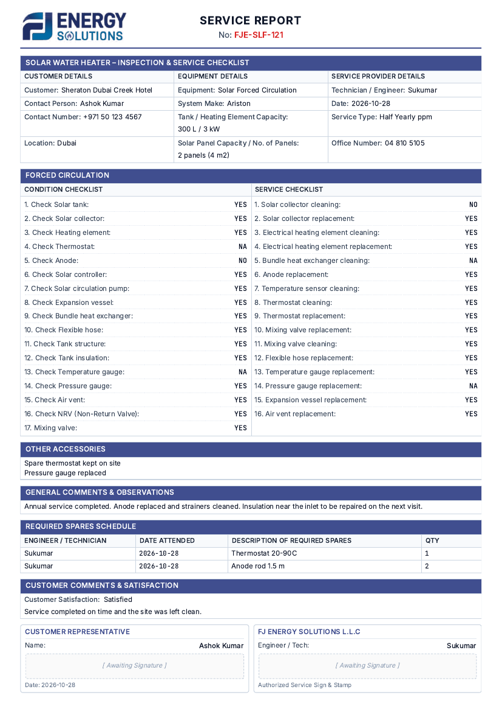
Backend (Docker API) 1 page(s) · PDF
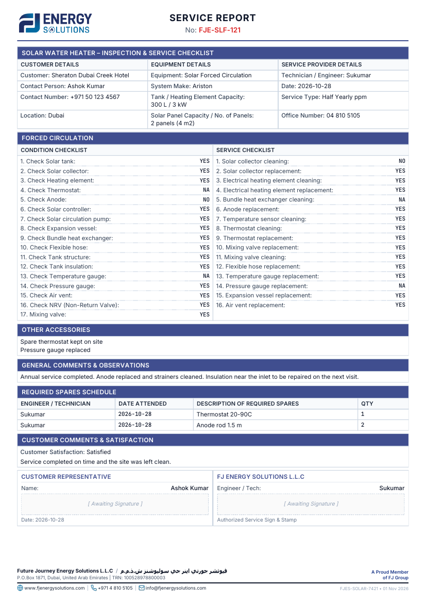
Solar - Thermosiphon
Frontend (UI print) 1 page(s) · PDF
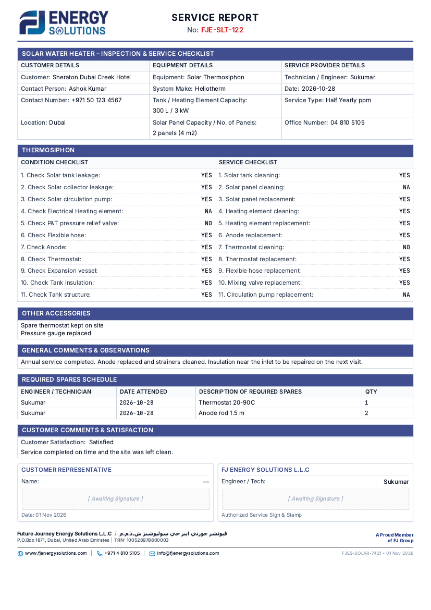
Backend (Docker API) 1 page(s) · PDF
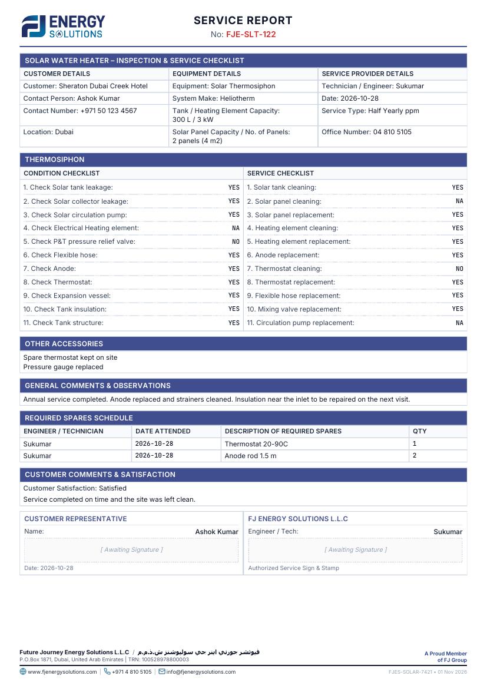
Riedel Kooling Chiller
Frontend (UI print) 1 page(s) · PDF
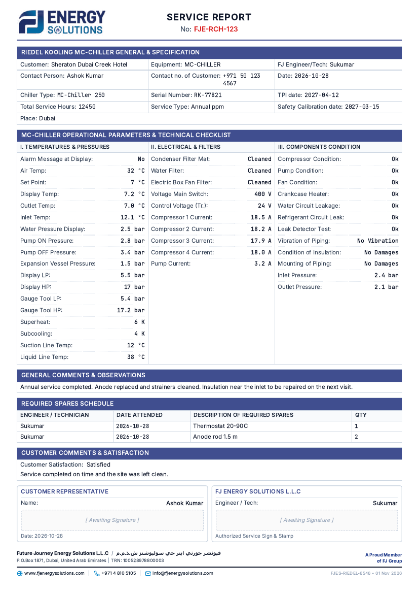
Backend (Docker API) 1 page(s) · PDF
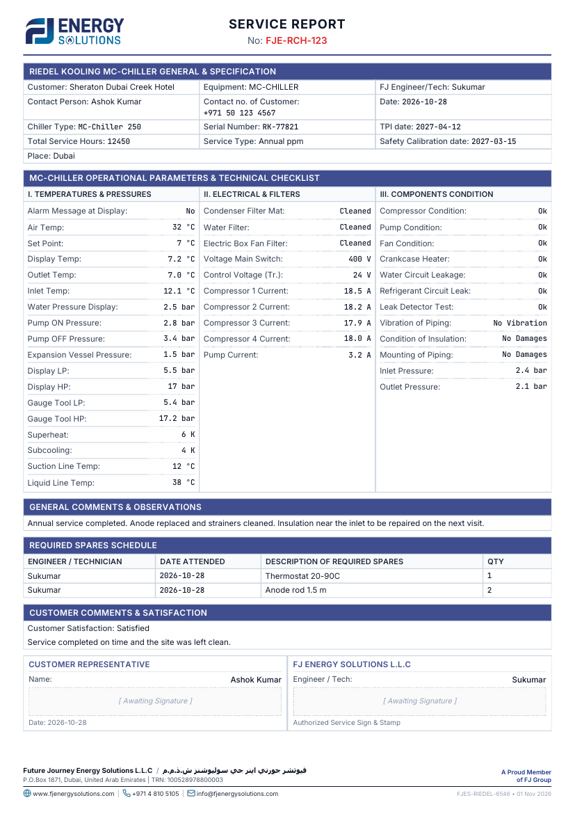
Heat Pump
Frontend (UI print) 2 page(s) · PDF
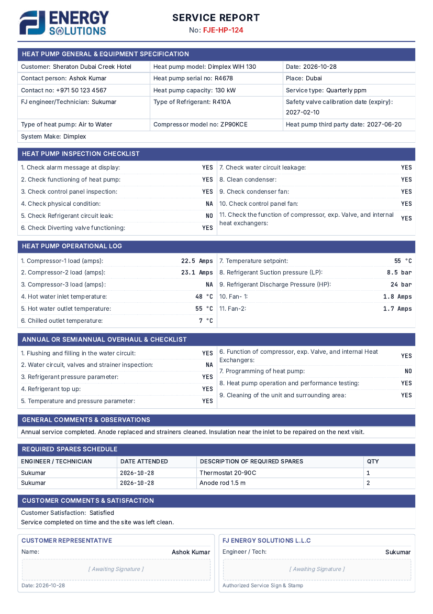
Backend (Docker API) 1 page(s) · PDF
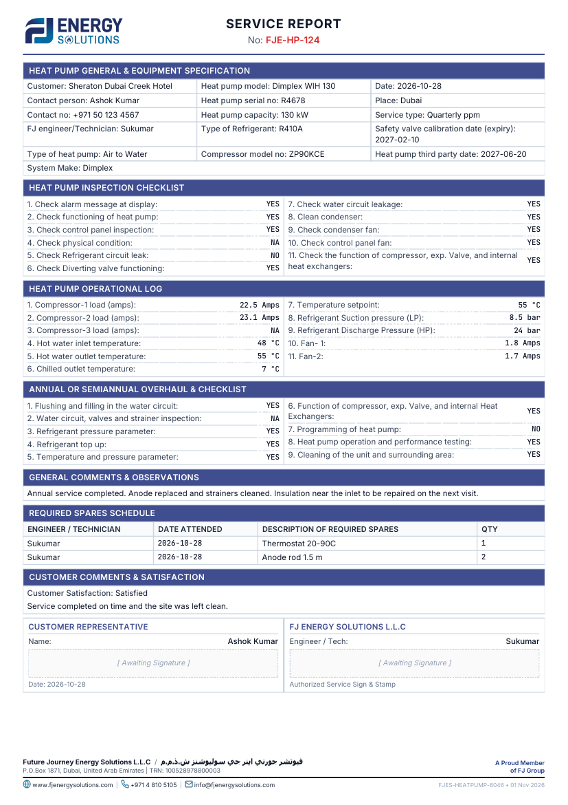